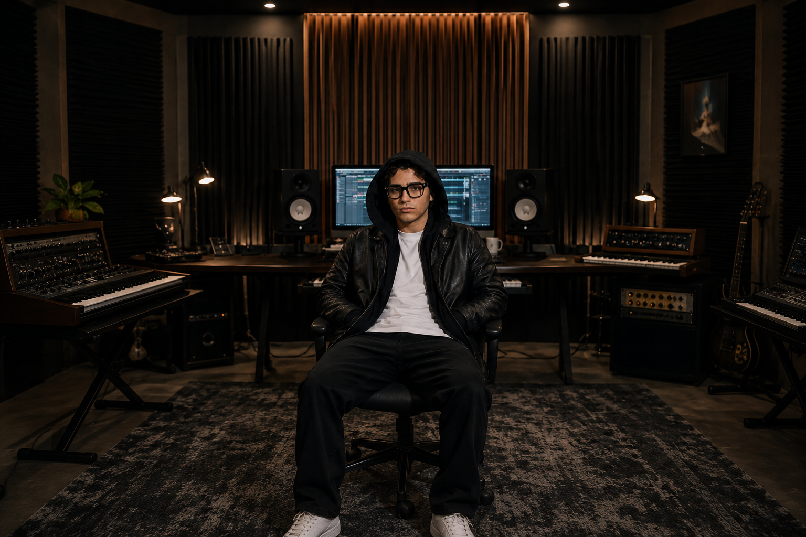

VİZYONUNU SESE DÖNÜŞTÜR
Fikirlerini sadece demoda bırakma. Onları kalıcı bir esere dönüştürelim.
NELER YAPIYORUM?
MÜZİK
PRODÜKSİYONU
İLK MELODİDEN SON DÜZENLEMEYE KADAR, VİZYONUNUZU KUSURSUZ BİR SES DENEYİMİNE DÖNÜŞTÜRÜYORUM. ŞARKI YAZIMI, ARANJMAN VE SES TASARIMINDA DETAYLARA TAKINTILI BİR YAKLAŞIMLA, DİNLEYİCİYİ İÇİNE ÇEKEN KALICI ESERLER YARATIYORUM.
MIXING &
MASTERING
KAYITLARINIZIN GERÇEK GÜCÜNÜ ORTAYA ÇIKARIP ONLARA DERİNLİK VE DENGELİ BİR PARLAKLIK KAZANDIRIYORUM. HASSAS BİR MIX VE KRİTİK MASTERING SÜRECİYLE; MÜZİĞİNİZİN TELEFONDAN DEV SİSTEMLERE KADAR HER YERDE AYNI ETKİYLE, PROFESYONEL STANDARTLARDA DUYULMASINI SAĞLIYORUM.
MADE
TO
LAST.
İŞLERİM
HAKKIMDA
VİZYON
Her şarkının çıkış noktası başka. Önce o fikrin ne anlatmak istediğini netleştiriyor, sonra sesleri o duyguya hizmet edecek şekilde kuruyorum.
GÜVEN
Birlikte üretirken aklında soru kalmaması benim için önemli. Süreci açık tutar, zamanlamaya sadık kalır ve ne söz verdiysem onu eksiksiz teslim ederim.

İŞÇİLİK
Küçük detaylar parçanın hissini tamamen değiştirir. Sound design'dan son master dokunuşuna kadar her aşamada aceleye kaçmadan, parçanın hakkını vererek çalışırım.
ENERJİ
İyi prodüksiyon sadece temiz duyulmaz, dinleyeni yakalar. Benim odağım da ilk anda bağ kuran, enerjisini kaybetmeyen ve tekrar dinleme isteği bırakan işler çıkarmak.